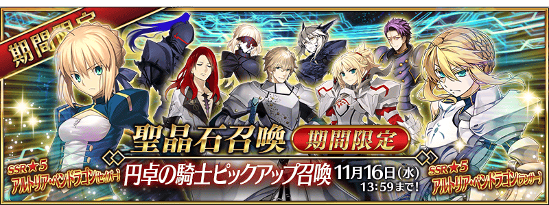

◆「圓桌騎士Pick Up召喚」期間◆
期間：2016年11月9日(三)16:00～11月16日(三)12:59
以期間限定舉辦「圓桌騎士Pick Up召喚」！
由於是圓桌騎士Pick Up召喚，因此★5(SSR)Servant及★4(SR)Servant只限「圓桌騎士」來歷的Servant為召喚對象。
詳情請在聖晶石召喚畫面左下的召喚詳細確認。
10次召喚中★4(SR)以上1張確定和★3(R)以上的Servant1位確定！
※★4(SR)以上確定包含Servant和概念禮裝。
※所謂「出現機率UP」意指比同稀有度的Servant及概念禮裝出現機率更高的設定。
◆召喚對象★5(SSR)★4(SR)Servant◆
| 職階 | 稀有度 | 名稱 |
|---|---|---|
| Saber | ★★★★★ | 阿爾托莉亞・潘德拉剛 |
| Saber | ★★★★★ | 莫德雷德 |
| Lancer | ★★★★★ | 阿爾托莉亞・潘德拉剛 |
| Saber | ★★★★ | 阿爾托莉亞・潘德拉剛〔Alter〕 |
| Saber | ★★★★ | 蘭斯洛特 |
| Saber | ★★★★ | 高文 |
| Archer | ★★★★ | 崔斯坦 |
| Lancer | ★★★★ | 阿爾托莉亞・潘德拉剛〔Alter〕 |
| Berserker | ★★★★ | 蘭斯洛特 |
※Pick Up期間中、阿爾托莉亞・潘德拉剛〔Alter〕(Saber)、阿爾托莉亞・潘德拉剛〔Alter〕(Lancer)、阿爾托莉亞・潘德拉剛(Lancer)、高文、崔斯坦就算在各章通過前也能入手。